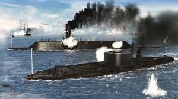
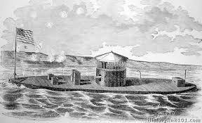
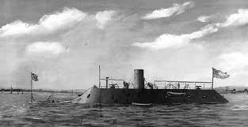
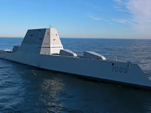
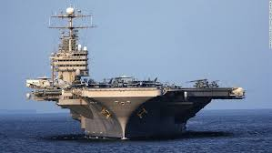
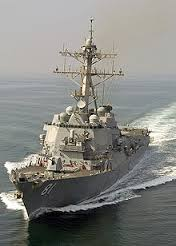

These are some pictures of ironclads in the civil war, mostly the USS Monitor and CSS Virginia. There are also some pictures of modern day battleships.

This is the USS Monitor and the CSS Virginia fighting. This "Duel of the Ironclads" was named the Battle of Hampton Roads.

This is the USS Monitor. It had a ventilation system, which looks like a chimney. Most people did not reconize it as an ironclad because it was so low in the water.

This is the CSS Virginia. The Virginia was a wooden union ship, until it got burnt, and only the hull remained. Using this, the Confederate made the CSS Virginia, which still had a wooden hull. Most people think the Virgnia and the Merrimack are different, but they are the same ship.

This ship is called the USS Zumwalt. This new destroyer is loaded with technology. Its hidden cannons, flat surfaces and sharp corners makes this very hard to spot on radar. It carries helicopters and and unmanned aerial vehicle.

This is an aircraft carrier. This can hold up to 90 planes. It is over 1,000 feet long, and can go without refueling for about 20-25 years. It can travel about 35 miles an hour and hold over 6,000 people. It can do this because it has 4 necular reactors.

This is a destroyer. It is a fast, maneuverable warship. A destroyer is designed to escort larger ships, and protect them from smaller, faster, short-range attackers.
back